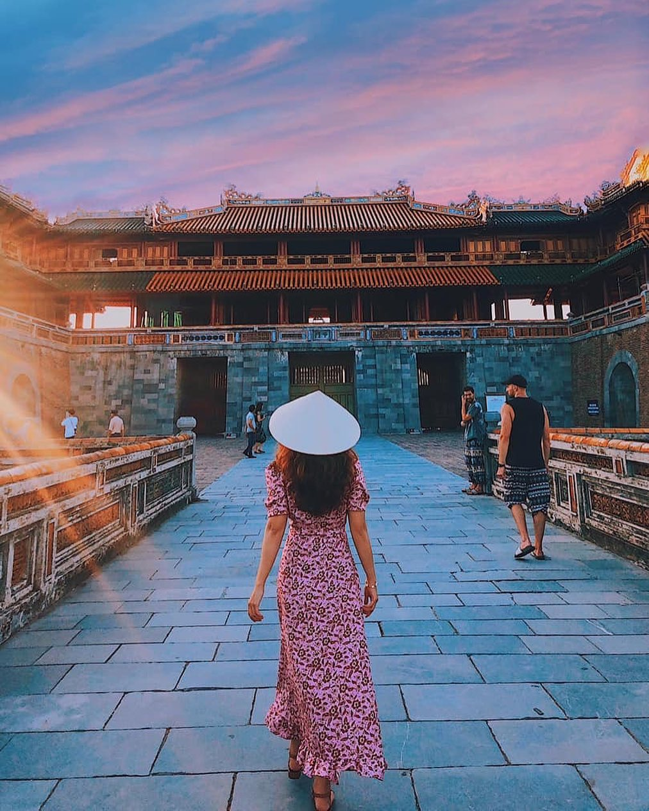
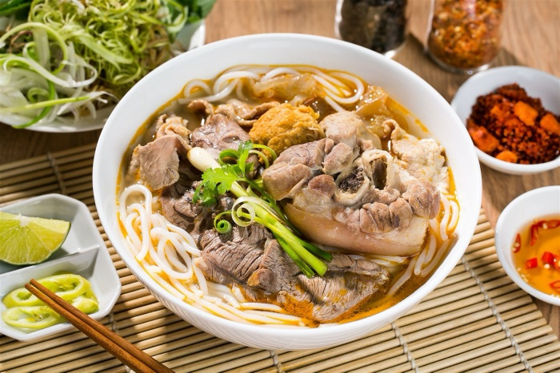
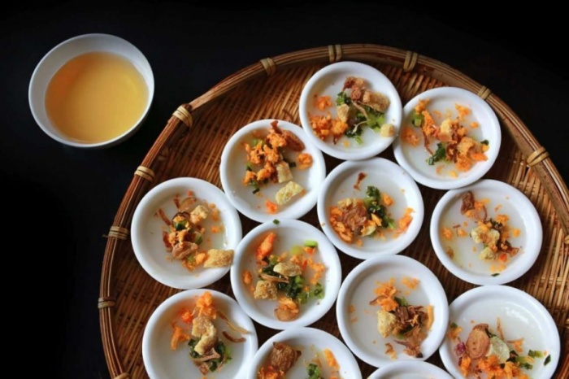
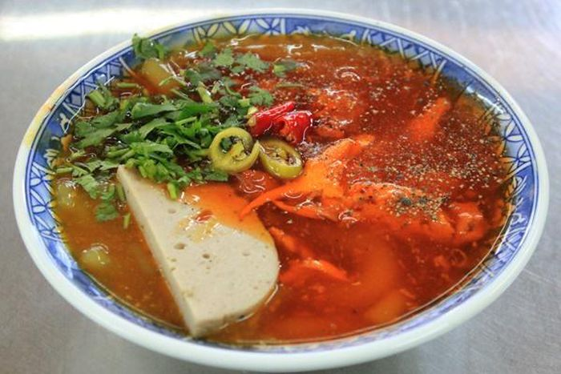

Du lịch Huế có gì hấp dẫn? Bạn sẽ có được đáp án sau khi tham khảo toàn bộ những thông tin dưới đây. Chắc chắn
lúc đó, bạn chỉ muốn xách ba lô và lên đường khám phá ngay miền đất cố đô xinh đẹp và ấn tượng này.

Huế-Địa điểm du lịch cổ kính,nên thơ
Du lịch Huế là một trong những chuyến đi thú vị nhất của mình.
Không chỉ được chiêm ngưỡng nét đẹp cổ kính của vùng đất cố đô, mình còn được thưởng thức những món ăn độc đáo,
đượm vị miền Trung. Hãy cùng tham khảo những review du lịch Huế của mình để có được kinh nghiệm hay ho nhất cho
kì nghỉ sắp tới của bạn nhé.
Huế là một tỉnh thuộc duyên hải miền Trung, có đường biên giới với Lào, giáp biển Đông, Quảng Nam, Đà Nẵng và
Quảng Trị. Huế nổi tiếng với cái đẹp thơ mộng, êm đềm mà dịu dàng. Nét duyên dáng ấy khiến bất cứ ai cũng muốn
du lịch Huế một lần trong đời.
Du lịch Huế để chiêm ngưỡng những nét đẹp cổ kính, trầm mặc (Nguồn: VOV)
Về miền đất cố đô, du khách được chiêm ngưỡng những cung điện vàng son, những lăng tẩm uy nghiêm, những danh lam
thắng cảnh nhuốm màu lịch sử, tất cả làm nên vẻ đẹp độc đáo cho vùng đất xứ Huế.
Hãy sắp xếp một chuyến du lịch cố đô Huế để tận mắt nhìn ngắm và cảm nhận những di sản văn hoá vật thể và phi
vật thể mang nhiều giá trị trí tuệ và tinh thần của người dân Việt Nam.
Du lịch Huế thì nên đi vào thời điểm nào?
Nếu có ý định đi du lịch Huế, bạn cần tìm hiểu xem đi mùa nào đẹp nhất. Ở Huế có rất nhiều danh lam thắng cảnh,
những món ăn ngon mà bạn nên thử. Vì vậy nếu đến Huế du lịch vào thời tiết tốt, bạn sẽ thuận lợi khám phá miền
đất cố đô xinh đẹp mà không sợ bị gián đoạn bởi những cơn mưa bất chợt.
Du lịch Huế tháng 4 - mùa lễ hội (Nguồn: VnExpress)
Theo kinh nghiệm đi Huế của mình, mùa hạ ở Huế khí hậu nóng bức, kéo dài từ tháng 3 đến tháng 8. Mùa mưa ở Huế
thường hay có bão lũ từ tháng 10 đến tháng giêng. Mùa đông trời se lạnh, nhiều khi nhiệt độ thấp dưới 10 độ C.
Còn mùa xuân ở Huế là khí hậu dễ chịu nhất, từ tháng Giêng đến hết tháng 3. Vì vậy, với kinh nghiệm du lịch Huế
tự túc của mình, bạn nên đi Huế vào mùa xuân để tận hưởng không khí mát mẻ và có thể thưởng ngoạn cảnh đẹp nơi
đây thoải mái nhất.
Từ tháng 1 - tháng 3: Thời tiết se lạnh, cây cối đâm chồi nảy lộc, cảnh sắc tươi đẹp. Thích hợp để
chiêm ngưỡng nét đẹp dịu dàng ở Huế.
Tháng 4: Mùa lễ hội Festival Huế. Không khí sôi động, náo nhiệt, đường phố trang trí rất đẹp. Nếu bạn
là người ưa thích phồn hoa, có thể du lịch ở Huế vào thời điểm này.
Từ tháng 5 - tháng 7: Lúc này khí hậu mát mẻ, khô ráo, cũng là thời điểm du lịch Huế đẹp nhất, đặc
biệt là đầu tháng 8.
Đặc biệt nếu bạn có kế hoạch phượt Huế 2 ngày thì việc lựa chọn thời điểm khá quan trọng. Thời tiết tốt giúp bạn
thuận lợi đi thăm cố đô Huế về đêm.
>>> Khám phá VinWonders Nam Hội An - tổ hợp vui chơi giải trí và trải nghiệm văn hóa, tôn vinh giá trị di sản đa
quốc gia hàng đầu khu vực miền Trung.
Có nên du lịch Huế? Những nét đặc trưng ấn tượng của xứ Huế
Du lịch Huế mang đến nhiều cảm xúc cũng như ấn tượng cho du khách thập phương. Nếu ai đã tới Huế, hẳn sẽ lưu luyến
vùng đất này không nỡ rời. Rất nhiều người từng hỏi, du lịch Huế có gì đẹp mà khiến biết bao du khách muốn quay trở
lại? Thật khó mà diễn tả bằng lời nếu chưa bước chân đến mảnh đất cố đô.
Huế có kiến trúc đẹp, độc đáo: Hệ thống cung điện, lăng tẩm Huế mang đậm kiến trúc cung đình triều Nguyễn
với những nét cổ kính, trầm mặc, uy nghiêm. Ngày nay, các công trình kiến trúc dù qua nhiều lần tu bổ nhưng vẫn
giữ nguyên được bản sắc và hồn Việt.
Là thành phố xanh, sạch đẹp: Đến du lịch Huế, du khách có thể dễ dàng bắt gặp hình ảnh người dân tham gia các
chiến dịch bảo vệ môi trường, làm sạch đường phố, nhặt rác sông Hương và khuyến khích khách tham quan di chuyển
bằng xe đạp. Những điều nhỏ bé này góp phần tạo nên một thành phố “Xanh - sạch - sáng” trong mắt khách du lịch.
Con người Huế thân thiện, hiền hòa: Con người ở Huế đặc biệt rất gần gũi và thân thiện. Họ luôn nở nụ
cười và nhiệt tình giúp đỡ người khác bất cứ khi nào. Nếu đến du lịch Huế mà không biết cố đô Huế ở đâu hoặc
đường đi như thế nào thì cứ hỏi người dân nơi này, họ sẽ rất vui vẻ giúp đỡ bạn.
Ấn tượng với nhạc cung đình Huế nổi tiếng: Nhã nhạc cung đình Huế là nét đẹp văn hóa, tinh hoa âm nhạc của Việt
Nam và đã được UNESCO công nhận là di sản văn hoá phi vật thể của nhân loại. Đến du lịch Huế, bạn hãy thử lắng
nghe loại hình âm nhạc độc đáo này nhé.
Con người Huế thân thiện, hiền hòa:Con người ở Huế đặc biệt rất gần gũi và thân thiện. Họ luôn nở nụ cười
và nhiệt tình giúp đỡ người khác bất cứ khi nào. Nếu đến du lịch Huế mà không biết cố đô Huế ở đâu hoặc đường đi
như thế nào thì cứ hỏi người dân nơi này, họ sẽ rất vui vẻ giúp đỡ bạn.
Ấn tượng với nhạc cung đình Huế nổi tiếng: Nhã nhạc cung đình Huế là nét đẹp văn hóa, tinh hoa âm nhạc
của Việt Nam và đã được UNESCO công nhận là di sản văn hoá phi vật thể của nhân loại. Đến du lịch Huế, bạn hãy
thử lắng nghe loại hình âm nhạc độc đáo này nhé.
Huế có nhiều nét đặc trưng riêng (Nguồn: VOV)
Các phương tiện đi lại tại Huế
Việc di chuyển tại Huế cũng khá dễ dàng. Bạn có thể lựa chọn những phương tiện sau cho chuyến du lịch Huế của
mình:
Taxi: Taxi là loại xe rất phổ biến, thuận tiện cho du khách đặc biệt là những du khách đi theo nhóm hoặc
khi thời tiết không tốt. Tuy nhiên, chi phí taxi khá đắt đỏ, bạn nên cân nhắc.
Xe máy: Để chủ động du lịch Huế và khám phá các món ẩm thực địa phương thì bạn nên thuê xe máy. Giá thuê
cũng không quá đắt, từ 100.000 đến 200.000 VNĐ/ngày.
Xích lô: Đến mảnh đất cố đô, bạn cũng có thể thử trải nghiệm di chuyển bằng xích lô để tận hưởng không
khí trong lành, bình yên nơi đây. Giá giao động từ 40.000 đến 70.000 VNĐ/1 chuyến tuỳ lịch trình.
Thuê ô tô: Nếu bạn muốn kết hợp nhiều điểm tham quan thì có thể thuê xe ô tô du lịch. Mức giá thuê xe 4
chỗ, 7 chỗ, 16 chỗ giao động từ 400.000 đến 1.600.000 VNĐ tùy lộ trình.
Di chuyển bằng xích lô là một trong những trải nghiệm thú vị khi đi du lịch Huế (Nguồn: Báo Nhân Dân)
Ăn gì khi đi du lịch Huế? 10 món đặc sản mang đậm chất Huế
Du lịch Huế ăn gì là câu hỏi mà các tín đồ du lịch tìm kiếm nhiều nhất. Ẩm thực ở Huế mang nét đặc trưng rất riêng.
Các món ăn không quá ngọt hoặc quá cay, đậm hương vị miền Trung và được chế biến rất khéo léo, tinh tế, khiến du
khách ăn một lần mà nhớ mãi.
Bún bò Huế:
Bún bò là đặc sản nức tiếng của Huế. Đi du lịch Huế, chắc chắn bạn phải dậy sớm và ăn một tô bún bò ngon chuẩn vị
tại đây. Nước dùng được ninh kĩ từ xương bò, hành tây, thêm các gia vị truyền thống khác tạo nên mùi vị thơm ngon,
hấp dẫn. Bún bò Huế sợi to, mềm, ăn kèm miếng chả cùng chút tiết và móng heo béo ngậy. Trước khi ăn, bạn hãy thêm ít
chanh tươi, vài miếng ớt cùng rau sống và trộn đều lên. Vị ngon của bún bò tại Huế khó nơi nào sánh bằng.

Bún bò Huế (Nguồn: Foody)
Bánh bèo Huế
Chén bánh bèo nóng hổi với nhân thơm ngọt đi cùng bát nước chấm có chút cay cay. Khi ăn, bạn hãy chan nước mắm lên
chén bánh bèo, thưởng thức vị mềm, dẻo của bột, vị thơm của hành phi, vị ngọt của nhân tôm thịt.

Bánh bèo Huế (Nguồn: Toplist)
Banh canh Nam Phổ
Một tô bánh canh Nam Phổ thơm ngon, xen lẫn nhân tôm thịt đậm đà cùng những cọng hành lá xanh mướt, rưới chút mắm ớt
xanh, ai có thể nỡ từ chối món ăn đặc sắc nhường này khi du lịch Huế chứ.

Bánh canh Nam Phổ (Nguồn: Sưu tầm)
Chè Huế
Huế nổi tiếng với rất nhiều loại chè, mỗi loại đều có vị thơm ngon riêng như chè hạt sen, chè trôi nước, chè khoai
môn, chè bột lọc thịt quay. Chẳng cần vào những nhà hàng lớn, chỉ cần ngồi bên những gánh hàng rong hay những con
hẻm nhỏ, gọi một cốc chè là bạn đã có thể thưởng thức nét tinh tế trong thức quà vặt của Huế rồi.